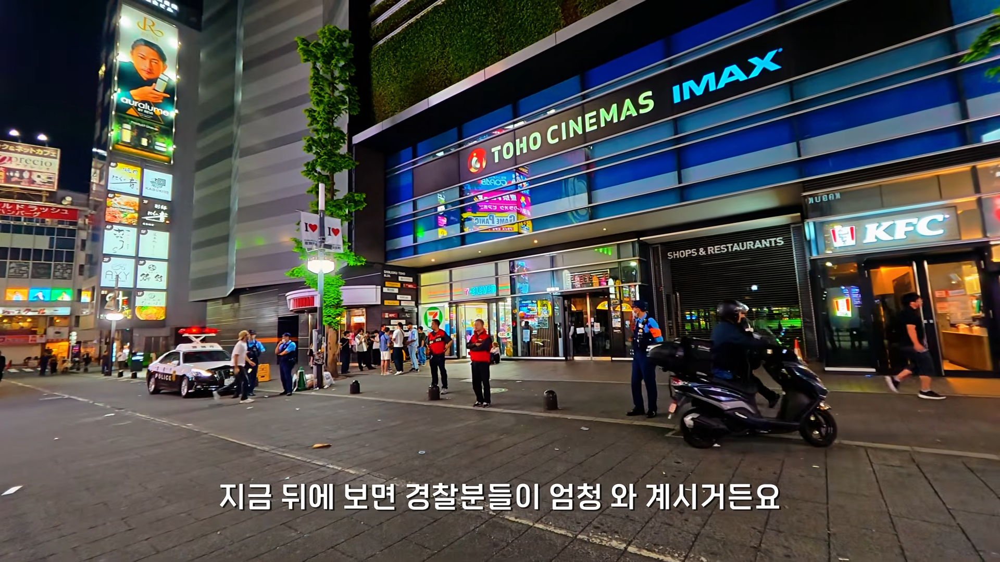
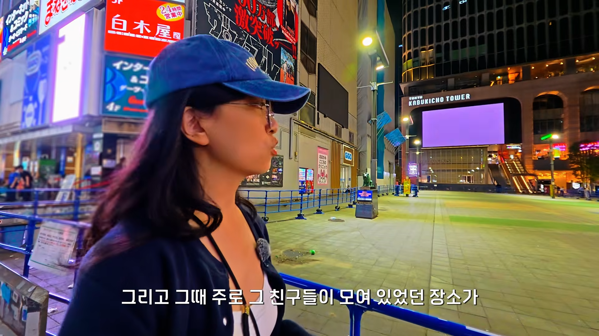
ㄷ
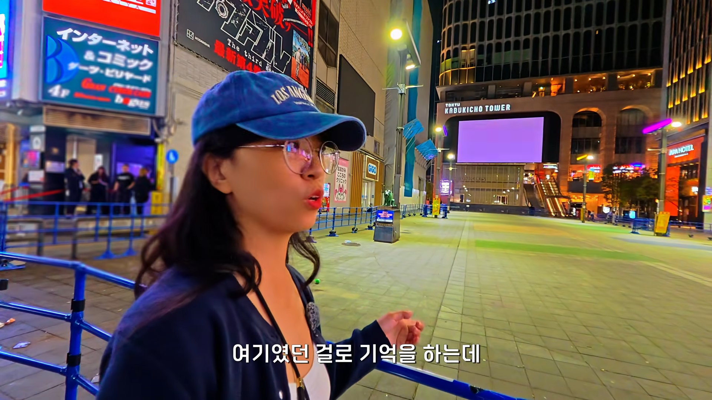
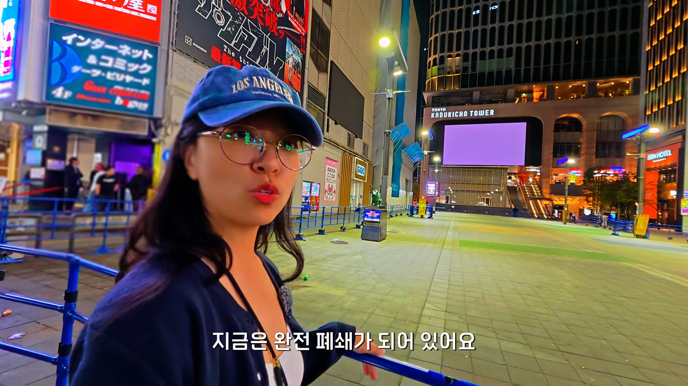
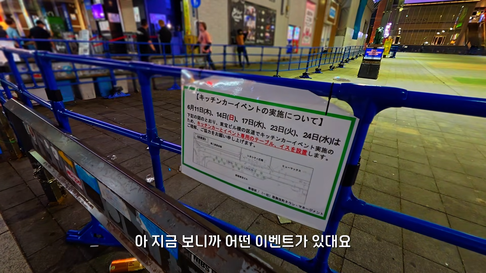
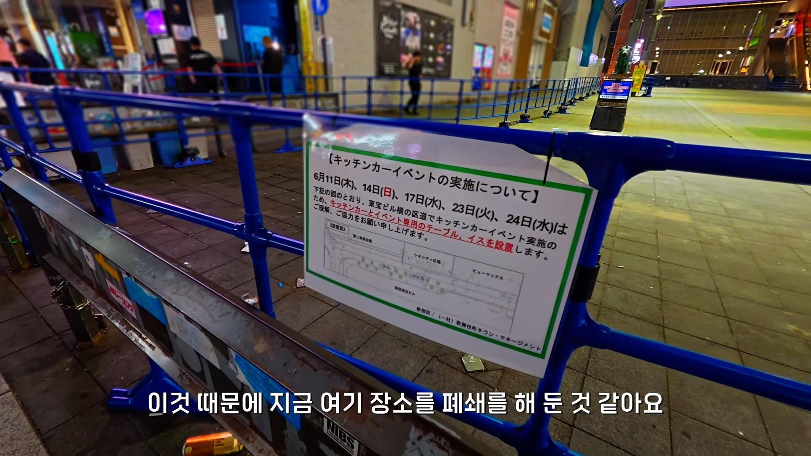
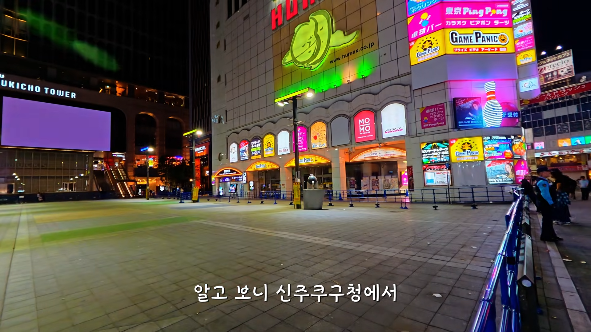
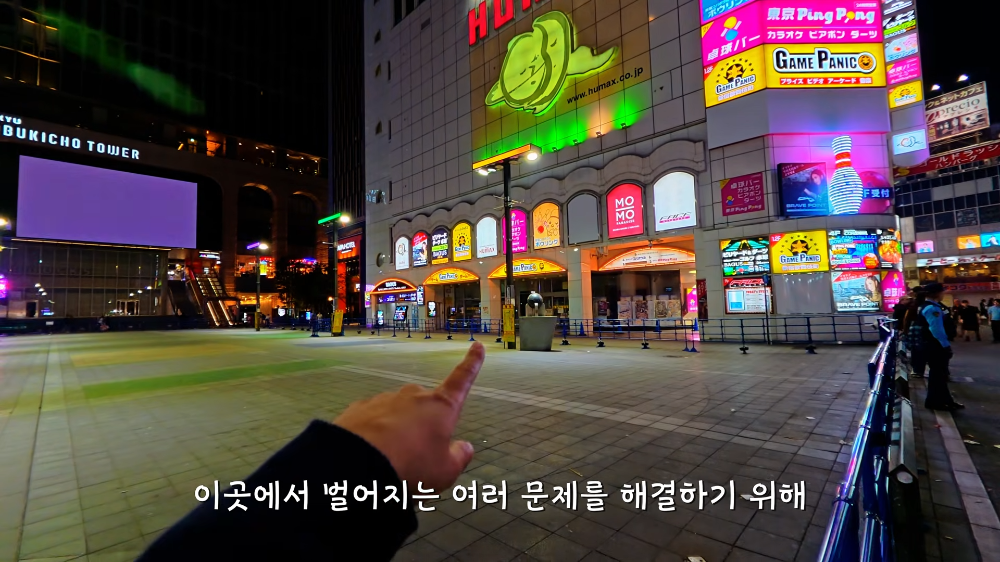
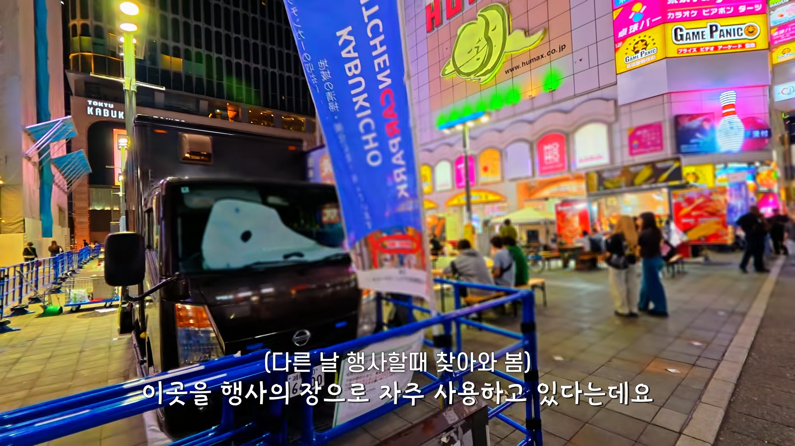
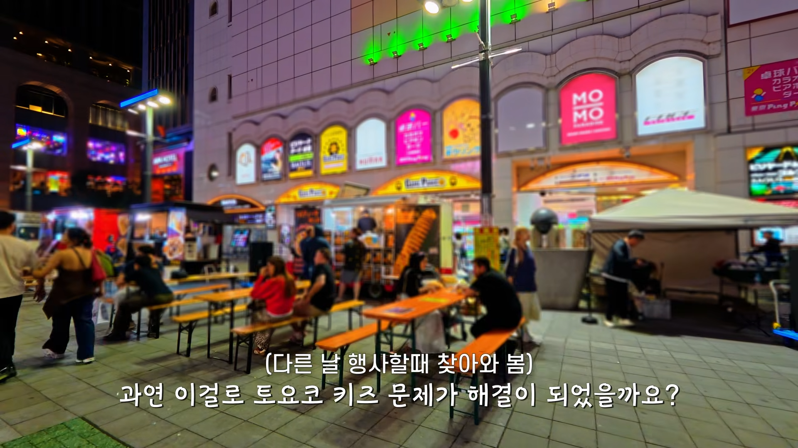
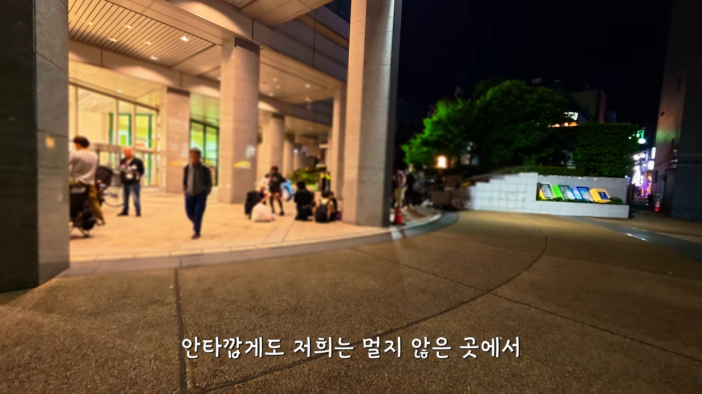
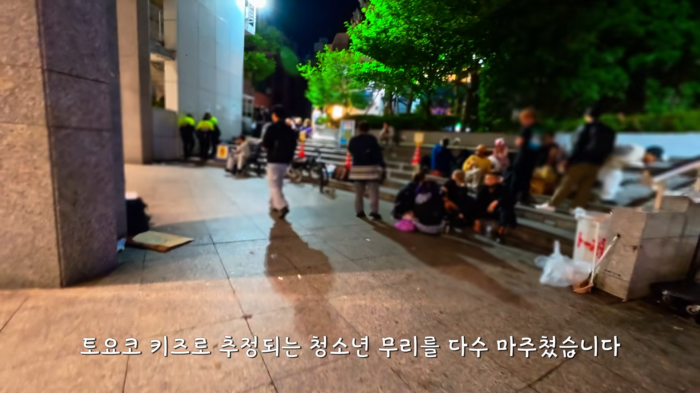
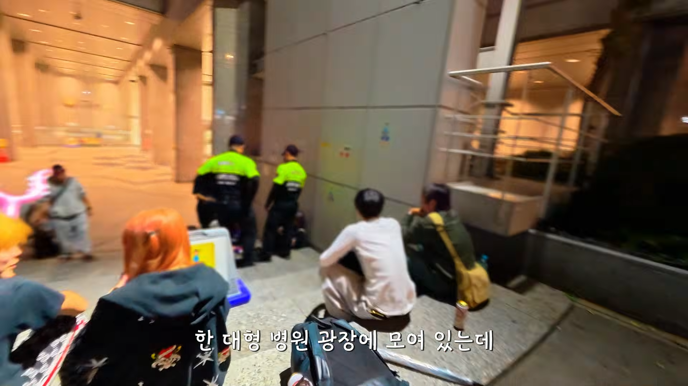
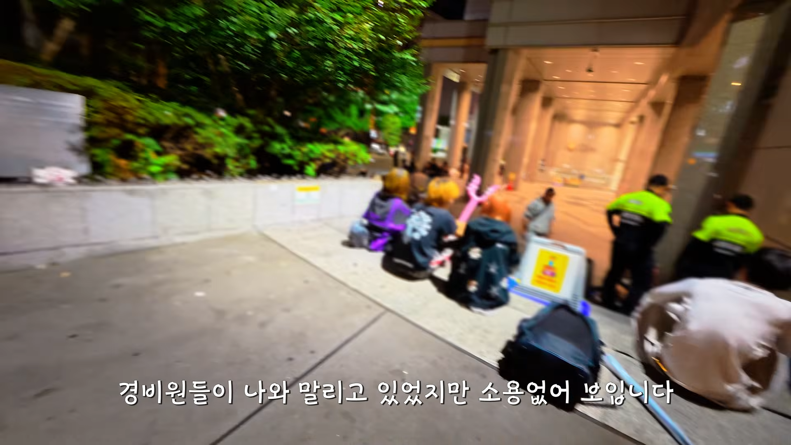
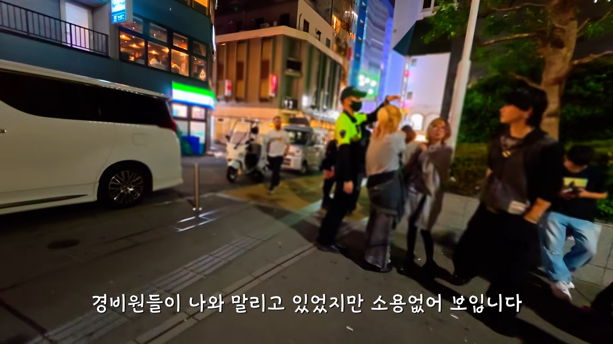
이사 갔음.


ㄷ













이사 갔음.
저기 가니깐 메이드 카페, 토크바 같은 좀 건전한 곳 홍보하는 메이드 코스프레 한 애들이 두줄로 일렬로 쫙 서서 피켓들고 홍보하고있더라
한국식 해결책을 일본에서도 쓰네 안보이는 곳으로 치우기
일본이 원조다.
냄새나는 항아리는 뚜껑을 덮는다.
는 속담까지 있다. 우리가 배운거야
여기도 용과같이에 나온거 같음 7
한국도 얼른 많이퍼져야지
이러면 병원광장키즈잖아